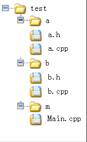
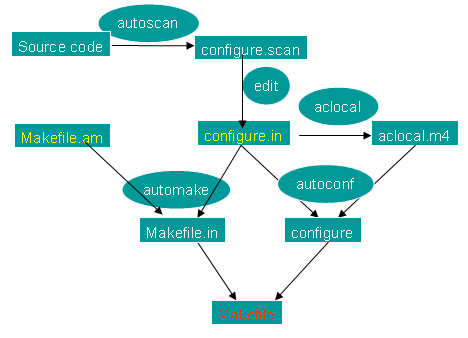
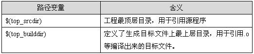

Automake 自动生成makefile
原文来自：百度文库
Makefile的基本结构不是很复杂，但当一个程序开发人员开始写Makefile时，经常会怀疑自己写的是否符合惯例，而且自己写的Makefile经常和自己的开发环境相关联，当系统环境变量或路径发生了变化后，Makefile可能还要跟着修改。这样就造成了手工书写Makefile的诸多问题，automake恰好能很好地帮助我们解决这些问题。
使用automake，程序开发人员只需要写一些简单的含有预定义宏的文件，由autoconf根据一个宏文件生成configure，由automake根据另一个宏文件生成Makefile.in，再使用configure依据Makefile.in来生成一个符合惯例的Makefile。下面我们将详细介绍Makefile的automake生成方法
本例在Red Hat Enterprise Linux 5环境下通过测试，详细介绍了多级目录结构下使用autotools来进行Makefile的自动生成,在阅读大量的资料后,在理解的基础之上,做了一个小实验,过程记录得非常详细，希望对大家有所帮助。
1、 源代码目录结构

其中test为顶级目录，a，b，m为源码目录，文件内容如下：
1）a.h与a.cpp，定义了CA类
class CA
{
public:
CA();
~CA();
};
#include <stdio.h>
CA::CA()
{
printf("Class CA Object Construct\r\n");
}
CA::~CA()
{
printf("Class CA Object DisConstruct\r\n");
}
2）b.h与b.cpp，定义了CB类
class CB
{
public:
CB();
~CB();
};
#include "b.h"
#include <stdio.h>
CB::CB()
{
printf("Class CB Object Construct\r\n");
}
CB::~CB()
{
printf("Class CB Object DisConstruct\r\n");
}
3）main.cpp，主程序
#include "a.h"
#include "b.h"
#include "c.h"
#include <stdio.h>
#include "ace/OS.h"
#include "ace/Log_Msg.h"
int main(int argc, char* argv[])
{
CA a ;
CB b;
ACE_DEBUG((LM_DEBUG, "Hello ACE! "));
ACE_OS::exit(0) ;
}
首先进入 project 目录，在该目录下运行一系列命令，创建和修改几个文件，就可以生成符合该平台的Makefile文件，操作过程如下：
1) 运行autoscan命令，autoscan可以用目录名做为参数，但如果你不使用参数的话，那么autoscan将认为使用的是当前目录。autoscan将扫描你所指定目录中的源文件，并创建configure.scan文件
2) 将configure.scan 文件重命名为configure.in，并修改configure.in文件，configure.scan包含了系统配置的基本选项，里面都是一些宏定义
3) 运行aclocal命令，aclocal是一个perl 脚本程序。aclocal根据configure.in文件的内容，自动生成aclocal.m4文件。aclocal的定义是：“aclocal - create aclocal.m4 by scanning configure.ac”。
4) 运行autoconf命令，autoconf是用来产生configure文件的。configure是一个脚本，它能设置源程序来适应各种不同的操作系统平台，并且根据不同的系统来产生合适的Makefile，从而可以使你的源代码能在不同的操作系统平台上被编译出来。 configure.in文件的内容是一些宏，这些宏经过autoconf 处理后会变成检查系统特性、环境变量、软件必须的参数的shell脚本。configure.in文件中的宏的顺序并没有规定，但是你必须在所有宏的最前面和最后面分别加上AC_INIT宏和AC_OUTPUT宏
5) 在project目录下新建Makefile.am文件
Makefile.am是用来生成Makefile.in的，需要你手工书写。Makefile.am中定义了一些内容：
AUTOMAKE_OPTIONS
这个是automake的选项。在执行automake时，它会检查目录下是否存在标准GNU软件包中应具备的各种文件，例如AUTHORS、ChangeLog、NEWS等文件。我们将其设置成foreign时，automake会改用一般软件包的标准来检查。
bin_PROGRAMS
这个是指定我们所要产生的可执行文件的文件名。如果你要产生多个可执行文件，那么在各个名字间用空格隔开。
helloworld_SOURCES
这个是指定产生“helloworld”时所需要的源代码。如果它用到了多个源文件，那么请使用空格符号将它们隔开。比如需要helloworld.h，helloworld.c那么请写成helloworld_SOURCES= helloworld.h helloworld.c。
如果你在bin_PROGRAMS定义了多个可执行文件，则对应每个可执行文件都要定义相对的filename_SOURCES
6)运行 autoheader，它负责生成config.h.in文件
该工具通常会从“acconfig.h”文件中复制用户附加的符号定义，因此此处没有附加符号定义，所以不需要创建“acconfig.h”文件。
7) 运行automake –add-missing命令，我们使用automake --add-missing来产生Makefile.in。选项--add-missing的定义是“add missing standard files to package”，它会让automake加入一个标准的软件包所必须的一些文件。我们用automake产生出来的Makefile.in文件是符合GNU Makefile惯例的，接下来我们只要执行configure这个shell 脚本就可以产生合适的 Makefile 文件了。
8) 运行./confiugre脚本
9) 运行make进行编译,在符合GNU Makefiel惯例的Makefile中，包含了一些基本的预先定义的操作：
make：根据Makefile编译源代码，连接，生成目标文件，可执行文件。
make clean：清除上次的make命令所产生的object文件（后缀为“.o”的文件）及可执行文件。
make install：将编译成功的可执行文件安装到系统目录中，一般为/usr/local/bin目录。
make dist：:产生发布软件包文件（即distribution package）。这个命令将会将可执行文件及相关文件打包成一个tar.gz压缩的文件用来作为发布软件的软件包。它会在当前目录下生成一个名字类似“PACKAGE-VERSION.tar.gz”的文件。PACKAGE和VERSION，是我们在configure.in中定义的AM_INIT_AUTOMAKE(PACKAGE, VERSION)。
make distcheck：生成发布软件包并对其进行测试检查，以确定发布包的正确性。这个操作将自动把压缩包文件解开，然后执行configure命令，并且执行make，来确认编译不出现错误，最后提示你软件包已经准备好，可以发布了。
可以通过图2看出产生Makefile的流程，如图所示：
图 2生成Makefile流程图

Makefile.am是一种比Makefile更高层次的规则。只需指定要生成什么目标，它由什么源文件生成，要安装到什么目录等构成。
表一列出了可执行文件、静态库、头文件和数据文件，四种书写Makefile.am文件个一般格式。
文件类型 | 书写格式 |
可执行文件 | bin_PROGRAMES = foo foo_SOURCES = xxxx.c foo_LDADD = foo_LDFLAGS = foo_DEPENDENCIES = |
静态库 | #This would build a static archive called libfoo.a lib_LIBRARIES = libfoo.a foo_a_SOURCES = #LIBADD is for ADDitional LIBrary objects foo_a_LIBADD = #LDADD is for ADDitional linker (LD) objects. foo_a_LDADD = -lACE lib1.o #compiler option when compiling a program,可以把编译参数罗 #列在此处 foo_a_CPPFLAGS= -I$(ACE_ROOT) -Wall # pass any additional flags to libtool foo_a_LDFALGS = -L/usr/local/lib -release |
动态库 | lib_LTLIBRARIES = libshell.la foo_la_SOURCES = #add extra objects to the library libshell _la_LDADD = xmalloc.lo @LTLIBOBJS@ # pass any additional flags to libtool foo_la_LDFALGS = -version-info 1:0:1 |
头文件 | #需要安装的头文件 foo_include_HEADERS = foo.h #头文件的安装位置 includedir= |
数据文件 | data_DATA = data1 data2 |
LDFLAGS 选项 | -static: force libtool to build only a static archive for this library -release: it is desirable to encode the release number of a library into its name, libshell_la_LDFLAGS = -release 27 -version-info: Set the version number of the library according to the native versioning rules based on the numbers supplied, it defaults to -version-info 0:0:0 -no-undefined: |
对于可执行文件和静态库类型，如果只想编译，不想安装到系统中，可以用noinst_PROGRAMS代替bin_PROGRAMS，noinst_LIBRARIES代替lib_LIBRARIES。
Makefile.am还提供了一些全局变量供所有的目标体使用：
变量 | 含义 |
INCLUDES | 比如链接时所需要的头文件 |
LDADD | 比如链接时所需要的库文件 |
LDFLAGS | 比如链接时所需要的库文件选项标志 |
EXTRA_DIST | 源程序和一些默认的文件将自动打入 .tar.gz 包，其他文件若要进入 .tar.gz 包可以使用这种方法，如配置文件，数据文件等。 |
SUBDIRS | 处理本目录前 要递归处理哪些子目录 |
在Makefile.am中尽量使用相对路径，系统预定义了两个基本路径：
表 3Makefile.am中可用的路径变量

在上文中我们提到过安装路径，automake设置了默认的安装路径：
1) 标准安装路径
默认安装路径为：$(prefix) = /usr/local，可以通过./configure --prefix=<new_path>的方法来覆盖。
其它的预定义目录还包括：bindir = $(prefix)/bin, libdir = $(prefix)/lib, datadir = $(prefix)/share, sysconfdir = $(prefix)/etc等等。
2) 定义一个新的安装路径
比如test, 可定义testdir = $(prefix)/test, 然后test_DATA =test1 test2，则test1，test2会作为数据文件安装到$(prefix)/ /test目录下。
我们首先需要在工程顶层目录下（即project/）创建一个Makefile.am来指明包含的子目录：
SUBDIRS=src/lib src/ModuleA/apple/shell src/ModuleA/apple/core CURRENTPATH=$(shell /bin/pwd) INCLUDES=-I$(CURRENTPATH)/src/include -I$(CURRENTPATH)/src/ModuleA/apple/include export INCLUDES |
Automake目前支持三种目录模式：flat，shallow和deep。
在flat模式中，所有文件都位于同一个目录中，也就是所有源文件，头文件以及其他库文件都位于当前目录中，且没有子目录。
在shallow模式中，主要的源代码都存储在顶层目录中，其他部分则存储在子目录中。
在deep模式中，所有源代码都存储在子目录中，顶层目录主要包含配置信息，也就是说所有源文件以及自己写的头文件位于当前目录的子目录中，而且当前目录里没有任何源文件。
3、 在顶级目录下编译多个文件(flat模式)
1、 Linux Makefile第一步
[root@localhost main]# autoscan
运行 autoscan , 自动创建两个文件：autoscan.log，configure.scan
2、 Linux Makefile第二步
修改configure.scan的文件名为configure.in(经个人测试，最好改成configure.ac)查看configure.in的内容
AC_PREREQ(2.59)
AC_INIT(main, 1.0, pgpxc@163.com)
#如果有多个源文件，按其默认或只写文件中的任意一个就好了，只是测试
AC_CONFIG_SRCDIR([m/main.cpp])
AC_CONFIG_HEADER([config.h])
#重点要加上这一句，最后的输出文件名及版本
AM_INIT_AUTOMAKE(test,1.0)
经过测试，按照上述方法做下去会不停报错，报警告，于是查看了官方帮助文档，摘取一部分如下：
Let us begin with the contents of configure.ac.
AC_INIT([amhello], [1.0], [bug-automake@gnu.org])
AM_INIT_AUTOMAKE([-Wall -Werror foreign])
AC_PROG_CC
AC_CONFIG_HEADERS([config.h])
AC_CONFIG_FILES([
Makefile
src/Makefile
])
AC_OUTPUT
于是，我把AM_INIT_AUTOMAKE(test,1.0)改成了AM_INIT_AUTOMAKE([-Wall -Werror foreign])，于是大功告成！
# Checks for programs.
AC_PROG_CXX
AC_PROG_CC
# Checks for libraries.
#AC_CHECK_LIB([ACE])
#基于多线程的程序，要加入AC_PROG_RANLIB，不然运行automake命令时会出错
# 生成动态/静态库需要LIBTOOL, #使用了静态库编译,需要此宏定义
#AC_PROG_RANLIB
# Checks for header files.
# Checks for typedefs, structures, and compiler characteristics.
# Checks for library functions.
#这是要输出的文件名，要输出的是Makefile
AC_OUTPUT(Makefile)
3、 Linux Makefile第三步
运行 aclocal,生成一个“aclocal.m4”文件和一个缓冲文件夹autom4te.cache，该文件主要处理本地的宏定义。
[root@localhost main]# aclocal
4、 Linux Makefile第四步
运行 autoconf, 目的是生成 configure 此时的状态是
[root@localhost main]# autoconf
5、 Linux Makefile第五步
运行 autoheader，它负责生成config.h.in文件。该工具通常会从“acconfig.h”文件中复制用户附加的符号定义，因此此处没有附加符号定义，所以不需要创建“acconfig.h”文件
[root@localhost main]# autoheader
6、 Linux Makefile第六步，下面即将运行 automake, 但在此之前应该做一下准备工作!
首先创建一个 Linux Makefile.am.这一步是创建Linux Makefile很重要的一步，automake要用的脚本配置文件是Linux Makefile.am，用户需要自己创建相应的文件。之后，automake工具转换成Linux Makefile.in。这个Linux Makefile.am的内容如下：
AUTOMAKE_OPTIONS=foreign
#输出的可执行文件名，输出多个则用空格隔开即可
#noinst_LIBRARIES= test.la
noinst_PROGRAMS=test
#程序所有依赖的源文件，.h文件不是必需的，实际情况下，.h文件可能包含实现所以最好在此列出bin_PROGRAMS= m/main.cpp a/a.cpp a/a.h b/b.cpp b/b.h
#附加头文件搜索路径
INCLUDES= -Ia –Ib –Ic
export INCLUDES
#链接时要的额外函数库名
test_LDADD= -lACE
#链接时要的额外库路径,如果所需要的库文件不在标准的库文件搜索路径下,这里指定额外库文件搜索路径
test_LDFLAGS= -L/usr/local/lib -D_GNU_SOURCE
DEFS+=-D_GNU_SOURCE
#swapincludedir=$(includedir)/swap #swapinclude_HEADERS=$(top_srcdir)/src/include/swap.h
注释：
。编译源文件一般有两种方式，库文件和可执行文件，而库文件也有两种方式，静态库文件和动态库文件，一般静态库用：
如果只想编译，而不想安装到系统中，对于可执行文件就用noinst_PROGRAMS代替bin_PROGRAMS；
对于动态库文件按就用noinst_LIBRARIES代替bin_LIBRARIES。对于安装的情况，库将会安装到$(prefix)/lib目录下，可执行文件将会安装到${prefix}/bin；最后两行的意思是将swap.h安装到${prefix}/include /swap目录下。
对于Linux下的信号量/读写锁文件进行编译，需要在编译选项中指明-D_GNU_SOURCE。所以在test_LDFLAGS中指明。而test_LDFLAGS只是链接时的选项，编译时同样需要指明该选项，所以需要DEFS来指明编译选项，由于DEFS已经有初始值，所以这里用+=的形式指明；
4、 在顶级目录下编译多个文件(deep模式)
具体流程跟上面的差不多，只是Makefile.am有一点不同，除了在工程目录下有一个以外，在需要编译的子目录里也同样必须有。
--cache-file= file | configure runs tests on your system to determine the availability of features (or bugs!). The results of these tests can be stored in a cache file to speed up subsequent invocations of configure. The presence of a well primed cache file makes a big improvement when configuring a complex tree which has configure scripts in each subtree. | ||
--help | Outputs a help message. Even experienced users of configure need to use --help occasionally, as complex projects will include additional options for per-project configuration. For example, configure in the GCC package allows you to control whether the GNU assembler will be built and used by GCC in preference to a vendors assembler. | ||
--no-create | One of the primary functions of configure is to generate output files. This option prevents configure from generating such output files. You can think of this as a kind of dry run, although the cache will still be modified. | ||
--quiet | |||
--silent | As configure runs its tests, it outputs brief messages telling the user what the script is doing. This was done because configure can be slow. If there was no such output, the user would be left wondering what is happening. By using this option, you too can be left wondering! | ||
--version | Prints the version of Autoconf that was used to generate the configure script. | ||
--prefix=prefix | The --prefix option is one of the most frequently used. If generated Makefiles choose to observe the argument you pass with this option, it is possible to entirely relocate the architecture-independent portion of a package when it is installed. For example, when installing a package like Emacs, the following command line will cause the Emacs Lisp files to be installed in /opt/gnu/share: $ ./configure --prefix=/opt/gnu | ||
--exec-prefix= eprefix | Similar to --prefix, except that it sets the location of installed files which are architecture-dependent. The compiled emacs binary is such a file. If this option is not given, the default exec-prefix value inserted into generated files is set to the same value as the prefix | ||
--bindir=dir | Specifies the location of installed binary files. While there may be other generated files which are binary in nature, binary files here are defined to be programs that are run directly by users. | ||
--sbindir=dir | Specifies the location of installed superuser binary files. These are programs which are usually only run by the superuser | ||
--libexecdir=dir | Specifies the location of installed executable support files. Contrasted with binary files, these files are never run directly by users, but may be executed by the binary files mentioned above | ||
--datadir=dir | Specifies the location of generic data files. | ||
--sysconfdir=dir | Specifies the location of read-only data used on a single machine | ||
--sharedstatedir=dir | Specifies the location of data which may be modified, and which may be shared across several machines. | ||
--localstatedir=dir | Specifies the location of data which may be modified, but which is specific to a single machine. | ||
--libdir=dir | Specifies where object code library should be installed. | ||
--includedir=dir | Specifies where C header files should be installed. Header files for other languages such as C++ may be installed here also. | ||
--oldincludedir=dir | Specifies where C header files should be installed for compilers other than GCC. | ||
--infodir=dir | Specifies where Info format documentation files should be installed. Info is the documentation format used by the GNU project. | ||
--mandir=dir | Specifies where manual pages should be installed. | ||
--srcdir=dir | is option does not affect installation. Instead, it tells configure where the source files may be found. It is normally not necessary to specify this, since the configure script is normally in the same directory as the source files. | ||
--program-prefix= prefix | Specifies a prefix which should be added to the name of a program when installing it. For example, using --program-prefix=g when configuring a program normally named tar will cause the installed program to be named gtar instead. As with the other installation options, this configure option only works if it is utilized by the Makefile.in file. | ||
--program-suffix= suffix | Specifies a suffix which should be appended to the name of a program when installing it | ||
--program-transform-name=program | Here, program is a sed script. When a program is installed, its name will be run through sed -e script to produce the installed name. | ||
--build=build | Specifies the type of system on which the package will be built. If not specified, the default will be the same configuration name as the host. | ||
--host=host | Specifies the type of system on which the package will run--or be hosted. If not specified, the host triplet is determined by executing config.guess | ||
--target=target | Specifies the type of system which the package is to be targeted to. This makes the most sense in the context of programming language tools like compilers and assemblers. If not specified, the default will be the same configuration name as the host. | ||
--disable-feature | Some packages may choose to provide compile-time configurability for large-scale options such as using the Kerberos authentication system or an experimental compiler optimization pass. If the default is to provide such features, they may be disabled with --disable-feature, where feature is the features designated name. For example: $ ./configure --disable-gui | ||
--enable-feature[=arg] | Conversely, some packages may provide features which are disabled by default. To enable them, use --enable-feature, where feature is the features designated name. A feature may accept an optional argument. For example: $ ./configure --enable-buffers=128 Using --enable-feature=no is synonymous with --disable-feature, described above. | ||
--with-package[=arg] | In the free software community, there is a healthy tendency to reuse existing packages and libraries where possible. At the time when a source tree is configured by configure, it is possible to provide hints about other installed packages. For example, the BLT widget toolkit relies on Tcl and Tk. To configure BLT, it may be necessary to give configure some hints about where you have installed Tcl and Tk: $ ./configure --with-tcl=/usr/local --with-tk=/usr/local Using --with-package=no is synonymous with --without-package which is described below. | ||
--without-package | Sometimes you may not want your package to inter-operate with some pre-existing package installed on your system. For example, you might not want your new compiler to use GNU ld. You can prevent this by using an option such as: $ ./configure --without-gnu-ld | ||
--x-includes=dir | This option is really a specific instance of a --with-package option. At the time when Autoconf was initially being developed, it was common to use configure to build programs to run on the X Window System as an alternative to Imake. The --x-includes option provides a way to guide the configure script to the directory containing the X11 header files | ||
--x-libraries=dir | Similarly, the --x-libraries option provides a way to guide configure to the directory containing the X11 libraries. |
{kind=link}
{kind=link}